Beepz permet d’acheter et de vendre une voiture sans vérification de crédit.
Trois mois pour unifier son identité sur l’ensemble de ses supports :
design système, landing page, emails.
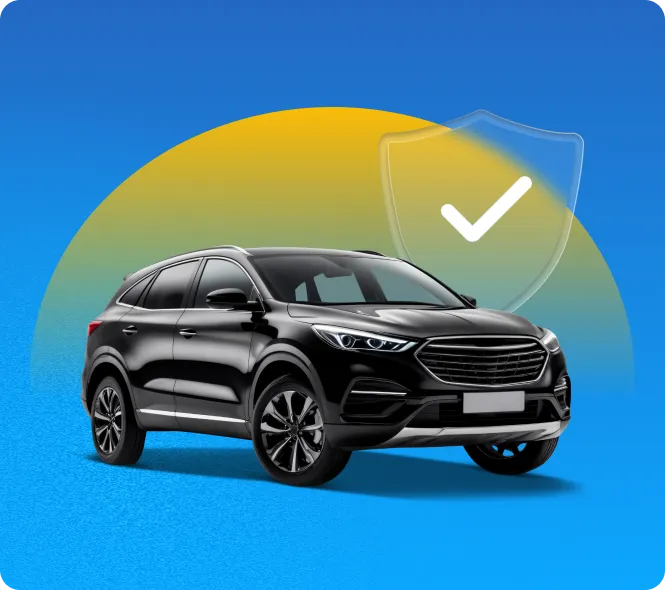
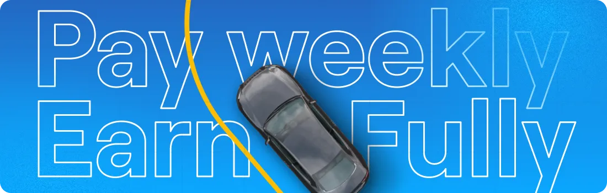
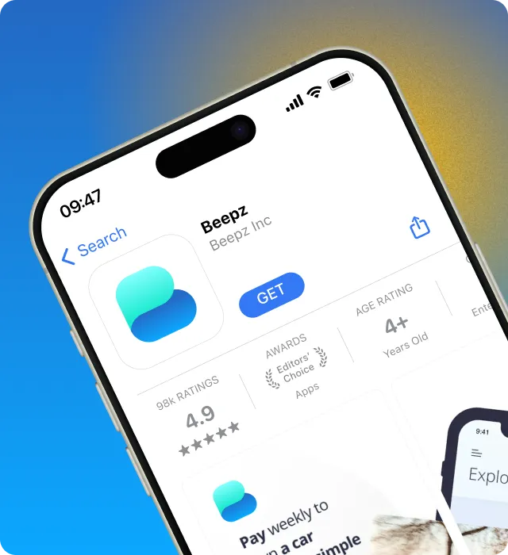
Année
2025
Rôle
UI/UX Designer
Durée
3 mois
Livrables
Design système·Landing page·Emails
L’approche
Ce qu’il y avait en arrivant
Beepz est une place de marché automobile née en Californie. Sa promesse :
acheter une voiture sans vérification de crédit, via
des frais d’activation uniques puis des paiements hebdomadaires. Un modèle qui
s’adresse à ceux qu’un score écarte du financement classique.
La société revendique plus de 100 000 téléchargements, 19 000 utilisateurs
actifs et 4 000 voitures vendues, et prépare son expansion hors de Californie.
Une croissance rapide, qui exige des fondations réutilisables.
À mon arrivée, aucune ligne directrice n’existait.
Chaque intervenant designait selon ses propres repères, et l’ADN de la marque se
diluait à chaque nouvel écran : le site ne correspondait pas à
l’application, les emails à aucun des deux.
Le fil rouge
Trois livrables, un seul système. La landing page et
les emails ne sont pas deux chantiers parallèles : ce sont les deux terrains
sur lesquels le socle a été appliqué, éprouvé, puis corrigé.
01
Le design système
Le socle
L’enjeu
Formaliser l’ADN de la marque, pour qu’aucun intervenant n’ait plus à le
deviner.
J’ai repris la palette existante plutôt que de la remplacer : intentions
conservées, rapports assainis. Surtout, chaque couleur porte désormais le nom
de son usage — Buyer Yellow, Seller Blue. Les deux faces de
la place de marché ont chacune la leur, et le choix cesse d’être une question
de goût.
Albert Sans porte l’ensemble : une famille unique, lisible par les deux
publics de la plateforme — les professionnels d’un côté, vendeurs et
gestionnaires de flottes ; les particuliers de l’autre. Sérieuse sans
être distante, elle tient du titre d’accroche à la mention légale.
Le système est livré sous deux formes : un fichier Figma qui rassemble
l’ensemble des guidelines, support de travail de l’équipe ; et un PDF
autonome que Beepz transmet à ses partenaires lors d’une collaboration.
Une couleur porte le nom de son destinataire, pas celui de sa teinte.
Typographie
Albert Sans, famille unique. Une seule voix pour deux publics.
Diffusion
Un Figma pour l’équipe, un PDF pour les partenaires. Deux usages, deux formats.
02
La landing page
La vitrine
L’enjeu
Rassurer les deux versants de la place de marché en même temps :
convaincre l’acheteur que le catalogue est fourni, et le vendeur qu’il y a des
acheteurs qui l’attendent.
La page en place n’avait jamais été pensée comme une page : un template
générique, monté pour que le nom de domaine ne reste pas vide. Rien n’y
mettait en avant ce qui distingue Beepz. Il n’y avait donc pas de refonte à
faire au sens strict — il fallait écrire la page.
Une place de marché se vend deux fois. Un vendeur ne dépose sa voiture que
s’il croit à la demande ; un acheteur ne s’inscrit que s’il croit au
stock. Déséquilibrer la page d’un côté, c’est perdre
l’autre — et une marketplace qui paraît vide ne se remplit jamais.
L’enjeu
Construire un parcours d’entrée là où il n’y en avait aucun — et le faire
mener chacun, acheteur ou vendeur, jusqu’à un profil complet.
Il n’y avait pas d’onboarding. Rien entre le
téléchargement de l’application et son écran d’accueil : ni guidage, ni
explication de ce que la plateforme permet de faire.
J’ai construit le parcours entier, du splash au profil renseigné. Il ne se
contente pas d’inscrire : il mène chacun jusqu’à un profil complet et
utile pour ce qu’il vient faire — un acheteur prêt à chercher, un
vendeur prêt à publier son annonce. Une quarantaine d’écrans traversés,
soixante-sept frames une fois les états comptés.
La décision qui tient tout le reste : la question
« How will you use Beepz? » est posée avant l’inscription, avant la
moindre saisie. Trois réponses — acheter, vendre, parrainer — et tout ce qui
suit en découle : un vendeur ne voit jamais les arguments de l’acheteur,
et la vérification d’entreprise ne s’adresse qu’aux professionnels.
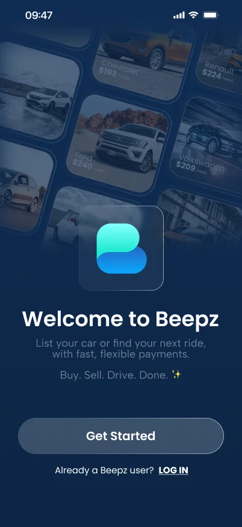
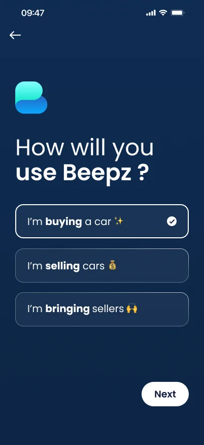
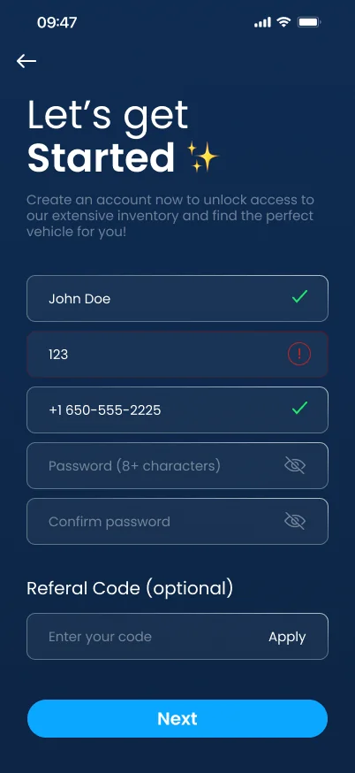
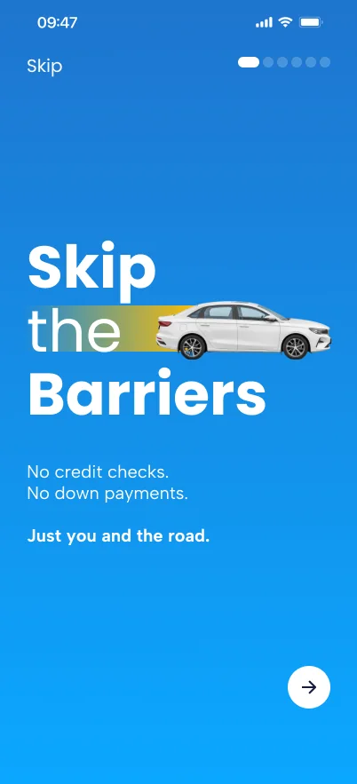
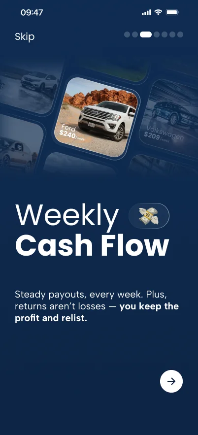
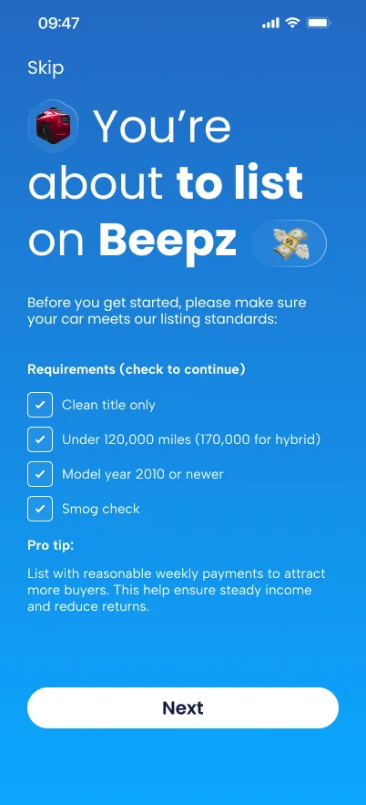
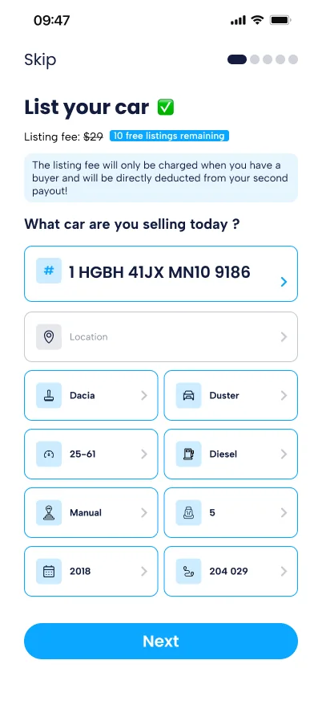
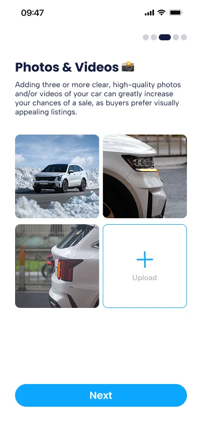
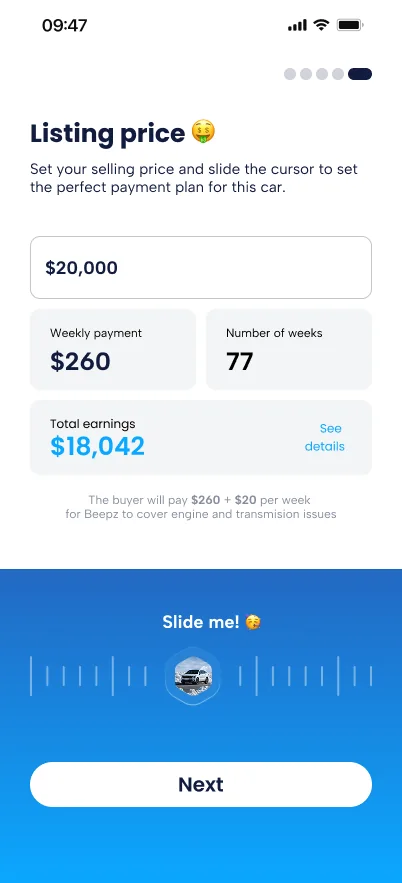
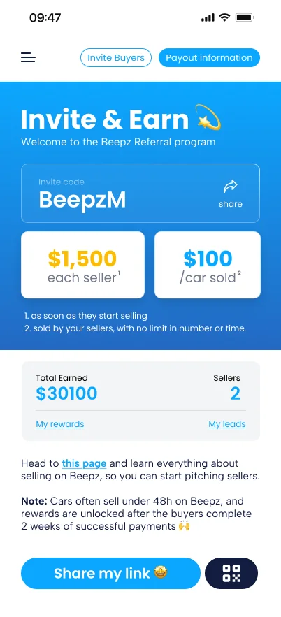
04
Les emails
La relance
L’enjeu
Aligner les emails sur le système, pour que la marque soit la même dans la
boîte de réception et sur le site.
Les gabarits ont été repris un par un : bandeaux, hiérarchie, boutons et
pieds de page redessinés sur la palette et sur la typographie du socle.
Chaque envoi emprunte désormais ses composants au reste du système — le
même appel à l’action, la même fiche véhicule que dans l’application. Le
système ne s’arrête pas au site.